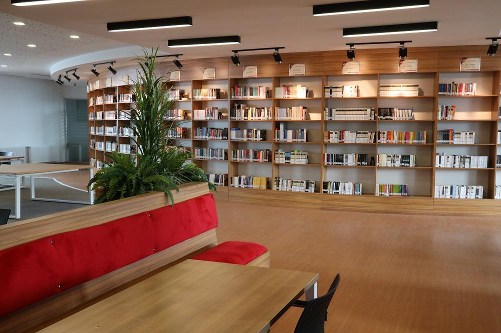
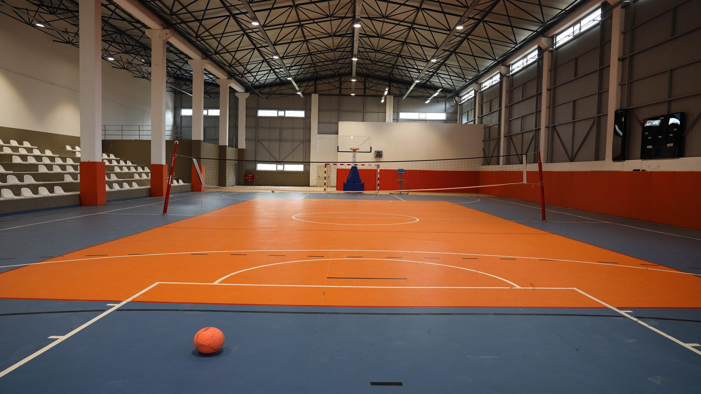
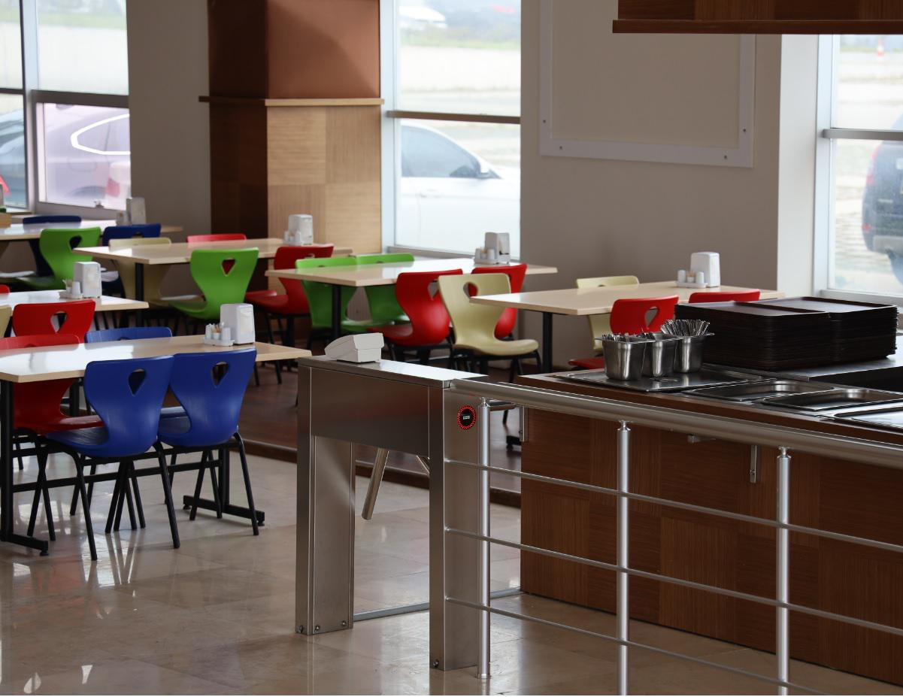

Sosyal Hayat ve Görseller
Sosyal Olanaklar
Samsun Üniversitesi kampüslerinde öğrencilerimiz için modern, dijitalleştirilmiş kütüphaneler, kapalı ve açık spor salonları, kültürel etkinlikler için öğrenci kulüpleri merkezi ve ferah sosyal dinlenme alanları yer almaktadır.


